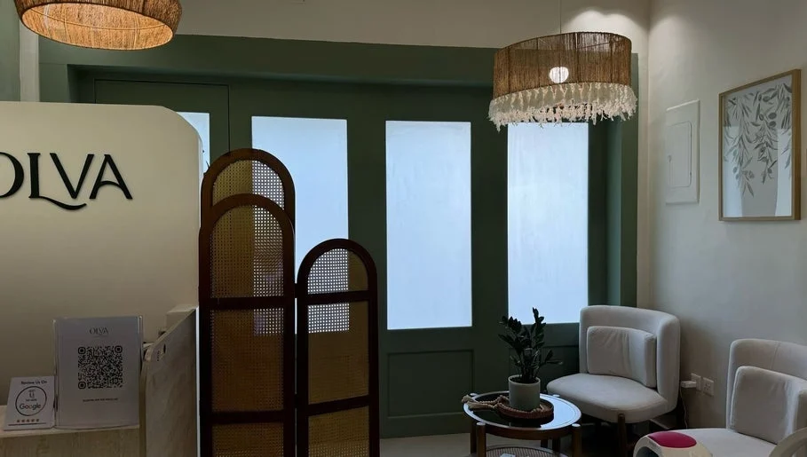
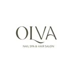
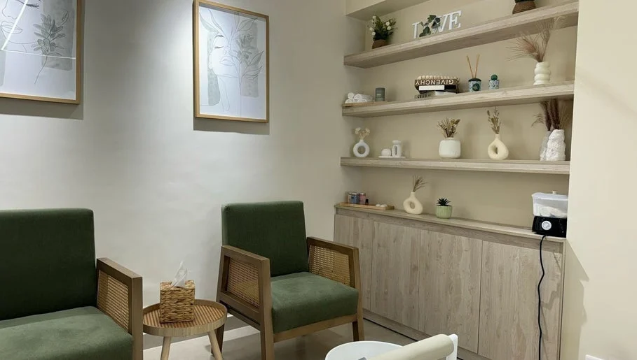

أولفا
مساحة هادئة
لروتينك المفضّل.
تجمع أولفا خدمات الأظافر والتصفيف والصبغات مع العناية بالحواجب والرموش. اختاري الخدمة التي تبحثين عنها من قائمة مرتبة، وتابعي الحجز أو تواصلي للاستفسار عن التفاصيل.
تعرّف على الموقع
أولفاOLVAاحجزي موعدك

الرياض، العليا
عناية بالأظافر والشعر والحواجب والرموش، في مساحة خضراء هادئة في العليا.
على ذوقك
خدمات مختلفة، ومساحة تختار فيها ما يناسبك.
الصور والأعمال
صور من الحساب العام وصفحة المنشأة؛ اضغط على أي صورة لعرضها كاملة.

أولفا
تجمع أولفا خدمات الأظافر والتصفيف والصبغات مع العناية بالحواجب والرموش. اختاري الخدمة التي تبحثين عنها من قائمة مرتبة، وتابعي الحجز أو تواصلي للاستفسار عن التفاصيل.
تعرّف على الموقعخطّط لزيارتك
اختر ما يناسبك، ثم راجع اختياراتك قبل الانتقال إلى الحجز.
قائمة منشورة على Fresha بتاريخ ٢١ سبتمبر ٢٠٢٦. قد تختلف الأسعار حسب الخيارات والعروض؛ السعر والموعد النهائيان على منصة الحجز.
يسعدنا اللقاء
OLVA Spa, Al Muhandis Masaid Al Anqari, Al Olaya, Riyadh, Riyadh Province
+966 58 093 9579أولفا